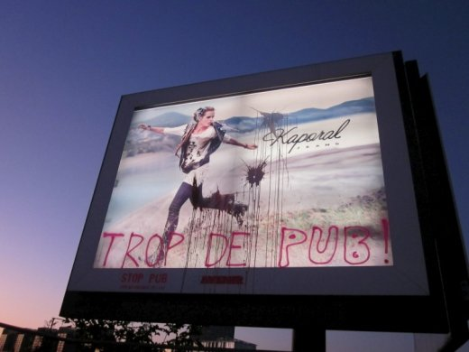
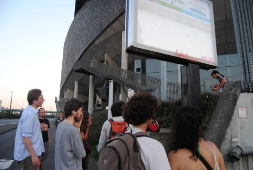
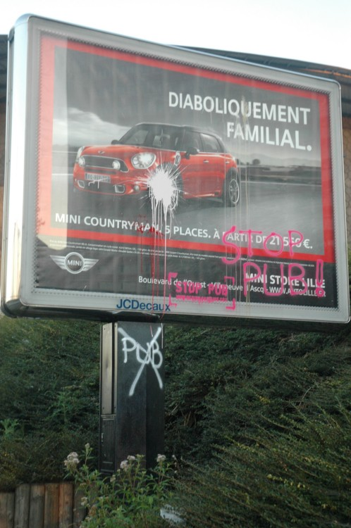

| |
Site dédié à la publication d'informations communiquées par le Collectif des déboulonneurs. En aucun cas ce site n'appelle à des actions illégales. | |
 |
||
|
Accueil du site > Lille > 41e Action du Collectif des Déboulonneurs de Lille – 28 Septembre (...)

Résumé de l’actionDate : Mercredi 28 septembre 2011 Heure de rendez-vous : 18 h 30 Lieu de rendez-vous : Rue Javary, intersection entre la rue Javary et la rue de Tournai (près des Vélib’) Heure approximative de l’action elle-même : de 19h à 20h Description de l’action : Projection d’œufs remplis de colorants et barbouillage de panneaux déroulants qui bordent les côtés de la rue Javary Nombre de barbouilleurs : 4 Nombre de participants à l’action : une dizaine de participants Rôles : Non définis au départ, chacun prenant le rôle adéquat en fonction du déroulement de l’action Nombre (approximatif) de passants ayant assisté aux événements : très peu de passants mais de nombreux automobilistes compte tenu du fait que la rue Javary soit surtout une voie de circulation Taille des panneaux publicitaires : 8 m² Propriétaire des panneaux touchés : Avenir, JC Decaux Inscriptions portées sur les panneaux : (sur lesquels fut systématiquement apposée au pochoir la signature www.deboulonneurs.org)
Nombre approximatif de journalistes présents : Aucun Nombre approximatif de policiers : Aucun Retombées médias : Toutes les photos : Portfolio 
Compte-rendu détailléC’était une « petite » action, mais qui a tout de même duré plus d’une heure puisque le groupe s’est engagé rue Javary vers 18h45 et qu’il est revenu au point de départ vers 20h. Les participants à l’action sont arrivés entre 18h30 et 18h45 sur le lieu de rendez-vous. En dehors des habitués, il y a eu cinq autres participant(e)s dont trois nouveaux. La particularité de cette action, nonobstant le fait que c’est la première fois que des lancers d’œufs ont été tentés, est le débranchement du courant simultané sur deux panneaux de 8 m² (comme indiqué ci-dessus). Il était d’ailleurs prévu que l’immense bâche de 100 m² du Palais des Congrès soit visée par les projectiles, mais cette bâche (du reste difficilement accessible autrement que par des frondes-arbalètes) a été retirée quelques jours avant l’action. Les « résultats » obtenus après « peinture » des faces des panneaux qui bordent la rue de Javary ont été pris en photo. La peur que le contenu de ses œufs ne soit pas suffisamment coloré a été levée après constat que l’effet rendu n’était pas si « incolore » que ça. Communiqué de PresseLes Déboulonneurs sont de nouveaux entrés en désobéissance civil ce mercredi soir. Armés d’œufs et de bombes de peintures, de simples citoyens ont barbouillé les nombreux panneaux illégaux qui bordent la rue Javary, derrière le Zenith. Cette rue, véritable porte d’entrée dans la ville en donne bien triste image : au delà des messages dangereux que la publicité véhicule, c’est le nombre bien trop important de ces panneaux que nous dénonçons. Dans cette seule rue, 10 panneaux sont considérés comme illégaux au regard du règlement local de publicité. Ce soir, les barbouilleurs n’ont pas été inquiétés par les forces de d’ordre. Inlassablement et jusqu’à gain de cause, c’est à dire la réduction significative de la publicité dans l’espace public, les déboulonneurs continueront d’alerter les citoyens contre ce fléau. 
|
|
Site utilisant SPIP - Hébergement Ouvaton
|